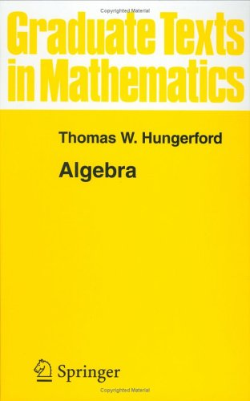

Course Description
-
This is a first semester graduate course in abstract algebra, and
is intended to be an introduction to the fundamental objects of groups, rings, modules,
fields, and vector spaces.
I intend to cover most of Chapters I–III and parts of Chapter IV from Hungerford's
classical algebra text (at right).
We should cover the following topics, time permitting.
- basic group theory
- solvable groups
- finitely generated abelian groups
- Sylow theorems and basics of the classification of simple groups
- free groups and inverse limits
- Rings, integral domains, and fields
- commutative rings
- polynomial rings
- localization
- principal ideal domains and unique factorization domains
- power series and power series rings
- introduction to modules
- exact sequences
- free modules and vector spaces
Prerequisites: Undergraduate abstract algebra (Math
415/6) or its equivalents.
|
|

|
 Mondays:
Mondays: